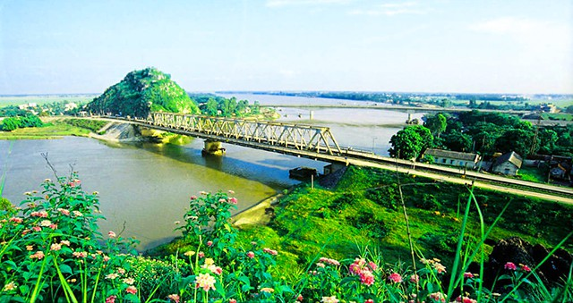

Cầu Hàm Rồng là quần thể du lịch - di tích nổi tiếng, gắn liền với thời kỳ phát triển của mảnh đất “địa linh nhân kiệt”. Đến Thanh Hóa mà chưa một lần đặt chân đến đây thì du khách chưa thấy được “linh hồn” cũng như cảm nhận được ý chí quật cường của người dân xứ Thanh.
1. Cầu Hàm Rồng ở đâu?
Mặc dù nằm trên tuyến đường Bắc-Nam của mảnh đất “địa linh nhân kiệt” nhưng nhiều người không biết cầu Hàm Rồng thuộc tỉnh nào? Thực chất, đây là cây cầu đầu tiên bắc ngang dòng sông Mã, cách trung tâm thành phố Thanh Hóa khoẳng 5km về phía Bắc. Do đó, nhiều người còn gọi cây cầu này là cầu Hàm Rồng sông Mã. Địa chỉ: Thị trấn Tào Xuyên, huyện Hoằng Hóa, tỉnh Thanh Hóa.
Theo QL1A, từ thành phố Thanh Hóa, bạn chỉ đi dọc theo đường Lam Sơn, rồi rẽ vào đường Hạnh Phúc. Sau đó, tiếp tục đi đến Nam Ngạn thì rẽ vào đường Hàm Long. Từ đây, bạn chỉ cần đi thêm một đoạn nữa
2. Lịch sử về cầu Hàm Rồng.
Trong kháng chiến chống đế quốc Mỹ, cầu Hàm Rồng đã trở thành một điểm nóng về quân sự chiến lược. Năm 1972 Hoa Kỳ dùng loại bom thông minh dẫn đường bằng laser phá nát cây cầu khiến nó bị phá hủy gần như hoàn toàn, tuyến giao thông bị tê liệt.

Một thời cầu Hàm Rồng bị phá hủy gần như hoàn toàn. Cây cầu này có cả một chiều dài lịch sử đầy hào hùng, bi tráng. Năm 1904 người Pháp bắt đầu xây dựng cầu Hàm Rồng có hình vòm bằng thép. Kết cấu cây cầu có nét tương đồng với Long Biên ở Hà Nội, ở giữa có đường ray cho tàu chạy qua, 2 bên là đường cho oto và xe thô sơ đi.

Giữ là đường ray, 2 bên dành cho xe thô sơ và người đi bộ. Năm 2000, cây cầu Hoàng Long được xây dựng nằm ngay cạnh Hàm Rồng, con đường chia đôi gánh nặng, giao thông qua sông Mã nhộn nhịp hơn bao giờ. Hiện nay, cây cầu cũ chỉ phục vụ cho tuyến đường sắt lưu thông là chính Cầu Hoàng Long nằm ngay cạnh cầu Hàm Rồng. Từ khi có cầu mới, cầu Hàm Rồng vắn người qua lại hơn, nhưng đây vẫn là nơi hẹn hò lý tưởng của nhiều cặp đôi, nơi tụ tập tán chuyện của những nhóm bạn học sinh áo trắng. Ngày nay, cầu Hàm Rồng đã trở thành một địa điểm tham quan nổi tiếng tại Thanh Hóa. Đứng trên cầu, du khách có thể phóng tầm mắt ra xa để ngắm dòng sông Mã êm đềm, nhìn núi Ngọc sừng sững và chiêm ngưỡng khung cảnh tuyệt đẹp của xứ Thanh. Tất cả tạo nên một bức tranh phong cảnh tuyệt đẹp, có sông, có núi, có cây cầu nghiêng nghiêng dưới ánh hoàng hôn.